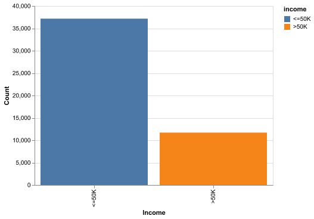
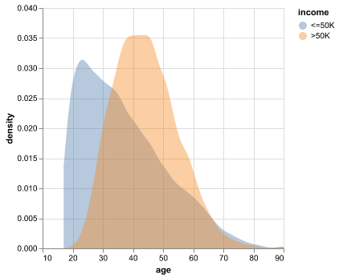
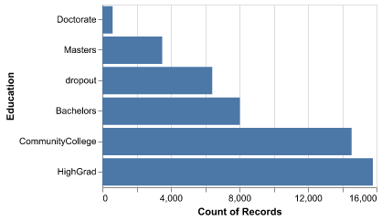
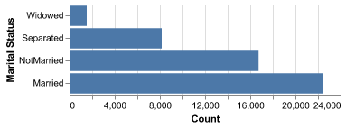
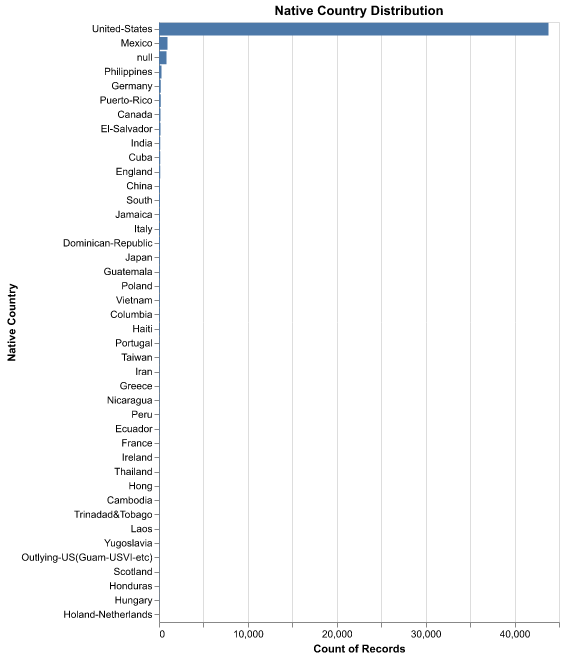
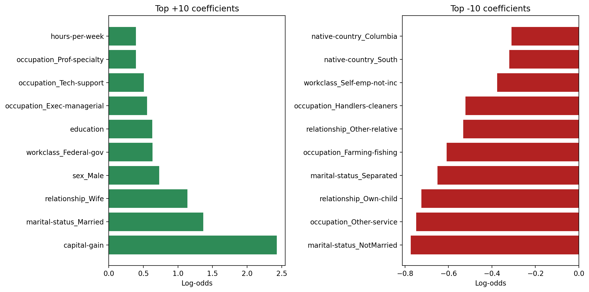

| model | train_accuracy_mean | train_accuracy_std | test_accuracy_mean | test_accuracy_std | fit_time_mean | score_time_mean |
|---|---|---|---|---|---|---|
| SVM-RBF | 0.866247 | 0.00147473 | 0.855037 | 0.00667547 | 0.586047 | 0.309393 |
| LogisticRegression | 0.851454 | 0.00191879 | 0.849304 | 0.0078078 | 0.0400904 | 0.00131488 |
| KNN | 0.88232 | 0.00180596 | 0.834049 | 0.00638451 | 0.00424371 | 0.0638126 |
| DecisionTree | 0.985437 | 0.000514588 | 0.814189 | 0.0045412 | 0.0195274 | 0.00144496 |
| Dummy-most_frequent | 0.760749 | 5.3867e-05 | 0.760749 | 0.000215433 | 0.00200963 | 0.000862169 |
| GaussianNB | 0.309787 | 0.00417648 | 0.308148 | 0.0104979 | 0.00577421 | 0.00150285 |
Predicting Adult Income via Demographics Data
Summary
Here, we tried to find the classification models with the highest accuracy on predicting if an individual’s income is greater than 50K/yr based on census data. Our final classifier has a reasonable performance on the unseen test data. We observed the Logistic Regression validation accuracy of 0.849 and the RBF-SVM test accuracy of 0.855.
The prediction model can possibly be further improved by pruning more features that are irrelevant to the prediction, since we are using almost all of the features for fitting the classifiers.
Introduction
A lot of factors impact an individual’s income. We see how wealth remains concentrated as the top 1% held 35% of the total wealth in 2022 (Kuhn and Rı́os-Rull (2025)). More recently, from 2024 to 2025, the U.S. Federal Reserve shows 35% of the family income less than 50K per year (Federal Reserve System (2025)). It is a big topic because it involves each family’s economic well-being.
This notebook explores the Adult Income dataset to understand how different demographic and employment characteristics relate to whether a person earns more or less than $50,000 per year. The analysis begins with exploring patterns in the data, identifying any issues, and preparing the dataset for modeling. After cleaning and preprocessing, we build and evaluate predictive models to see how well income levels can be predicted using the available features.
Methods
Data
The data set used here is from UC Irvine Machine Learning Repository, extracted by Barry Becker from the 1994 Census database (Becker and Kohavi (1996)).
Analysis
The algorithms below are considered for predicting whether if an individual’s income was above 50K/year or not: decision tree, k-nearest neighbors (k-nn), support vector machine with RBF kernel (SVM-RBF), logistic regression, gaussian naive bayes. All variables were used to fit the model, with the exception of: - fnlwgt: useless, since each row has a unique value - education-num: due to redundancy with education - race: for ethical reasons.
Data was split with 80% into the test set, and 20% into the train set to increase training time due to the vast amount of data. Imputation, one-hot encoding, and ordinal encoding are all done accordingly with details explained below. For model selection, we first conduct 5-fold cross-validation on all the models with default hyperparameters. Then, we select the top two models (Logistic Regression and SVM-RBF) to conduct a random search of hyperparameters with 5-fold cross-validation using accuracy as the classification metric. Finally, we used the best estimators of each to determine their accuracies on unseen test data.
EDA
Let us first try to look at the number of data points we have for each class.

<=50K vs >50K show the class mix before modeling.
Here in Figure 1, we clearly see there is class imbalance in the data, with more individuals earning <=50K than >50K. This means that a naive classifier that always predicts the majority class would already achieve non-trivial accuracy. Therefore, we must compare our models not just to a 50–50 baseline but also to this majority-class baseline. In future work, we could explore class-weighted loss functions or threshold tuning to better capture the minority high-income group.
Correlations and Redundancy

In Figure 2, we see that there are no extremely strong correlations between any pair of features, suggesting that severe multicollinearity is unlikely. Some moderate associations exist (e.g., between age and education, or hours worked and income-related variables), but they are not high enough to destabilize models like Logistic Regression. This supports our decision to keep most features, while still considering more advanced dimensionality reduction or feature selection later.
Taken together, these first checks show a moderate class imbalance and largely mild correlations, so we plan to watch class weighting while keeping most features intact for modeling.
Key Distributions

Figure Figure 3 shows a skew toward mid-career ages, suggesting that experience- and tenure-related features may be informative. We also expect interactions with hours worked and education, since older individuals with higher education might have different income trajectories than younger individuals working similar hours.
The bulk of observations sit in the prime working ages, so discriminating power may come more from labor variables (hours, occupation) and capital gains than from age alone.

Figure 4 highlights that most of the population clusters around mid-tier education levels such as high school and some college. Advanced degrees (e.g., Masters, Doctorate) are relatively rare, which means that their corresponding one-hot encoded levels have few observations. Regularization or grouping of similar education categories can prevent the model from overreacting to these small bins while still capturing the broad effect of education on income. grouping can prevent the model from overreacting to those small bins while still capturing the broad education effect.

Figure 5 shows class imbalance across race groups, which reinforces the need for careful interpretation of fairness and representation. Even though we chose to exclude race from our predictive models for ethical reasons, this imbalance is important context for understanding the demographic makeup of the dataset and the societal factors behind income disparities.
This imbalance means any downstream interpretation should consider fairness; we may explore reweighting or sensitivity checks in future work to ensure predictions are not driven by majority representation alone.

Figure 6 suggests marital status may proxy for household stability or earning patterns; for instance, married individuals might have different labor participation or income levels than those who are never married. We expect interactions with occupation, hours worked, and possibly age.
Marital status can also interact with dependents and life stage; inspecting combined effects will show whether it truly adds signal or just tracks broader demographic patterns.

Figure 7 shows heavy sparsity outside the United States, so grouping rare countries into broader regions (e.g., “Other”) could stabilize estimates and reduce noise in the model. Without grouping, many country-level dummy variables would be based on very few observations.
Overall, the categorical sparsity (education extremes, non-U.S. countries) and demographic skews (race, marital status) argue for careful encoding and potential grouping, while the moderate class imbalance suggests testing class weights during model training.
Model comparison and interpretation
From Table 1, we can see that RBF-SVM is slightly more accurate than the other models. Logistic Regression is close in accuracy, and its interpretability is better due to its use of linear coefficients that can be mapped to odds ratios. Decision trees and k-NN trail behind in accuracy under the chosen preprocessing and hyperparameter defaults, and Gaussian Naive Bayes performs the worst, likely because its independence assumptions do not hold well for this dataset.
There is also a computational trade-off: SVM-RBF is more expensive to train and tune than Logistic Regression, especially on large datasets with many one-hot encoded features. Thus, the choice between these models depends not only on accuracy but also on interpretability and computational constraints. In many applied settings, Logistic Regression may be a more practical default.
Results and Discussion
From the analyses above, we discovered that Logistic Regression and SVM-RBF are the best classification models for predicting income among the algorithms we tried. The Logistic Regression model achieves a test accuracy of 0.849, while the SVM-RBF model achieves 0.855. These numbers suggest that non-linear decision boundaries (from SVM-RBF) do help slightly, but a simple linear model is already quite competitive.
This is somewhat surprising because Logistic Regression is often treated as a baseline model for classification. The fact that it nearly matches the performance of SVM-RBF indicates that much of the predictive structure in the data can be captured with linear relationships in the encoded feature space. It also suggests that careful preprocessing and regularization can make linear models powerful in high-dimensional, mixed-type datasets.
We also checked for signs of overfitting by comparing cross-validation scores to test performance. The test accuracies are in line with the cross-validation estimates, which indicates that the models generalize reasonably well and that our hyperparameter tuning was not overly optimistic. ### Visual checks for interpretability
Figure 8 shows the strongest positive and negative Logistic Regression coefficients. From these, we find that key features include capital gains, specific occupations, native countries, and relationship status. For example, large positive coefficients for high capital gains or certain professional occupations suggest strong associations with higher income, while negative coefficients for some part-time or lower-wage jobs suggest an association with the <=50K class.

Interpreting these coefficients in terms of odds ratios, a one-unit increase in a positively weighted feature (or belonging to a positively weighted category) multiplies the odds of having income >50K by a factor greater than 1. Conversely, negative coefficients reduce those odds. This kind of interpretation is not directly available with the SVM-RBF model, which is why Logistic Regression remains attractive despite the small performance gap.
Limitations and Future Work
There are several limitations to our approach:
Predictive vs causal: The models capture associations rather than causal effects. We cannot conclude that changing a single feature (e.g., occupation) in isolation would cause income to change.
Feature set: We only used variables available in the Adult dataset. Important factors such as local labor markets, industry trends, or social networks are not included.
Fairness considerations: Even though we excluded race, the remaining features may still encode structural inequalities. A thorough fairness analysis (e.g., checking group-specific performance metrics) would be an important next step.
For future work, we should explore multiple options, including conducting a more extensive hyperparameter searching on logistic regression or SVM-RBF and using techniques like recursive feature elimination, regularization path analysis, or dimensionality reduction methods to reduce possible noise in features (Laxman (2024)). Grouping rare country categories and carefully handling sparse education levels could also make the model steadier and easier to explain.
Other ideas include:
Trying additional models such as gradient boosting or random forests.
Incorporating class-weighted loss functions to better capture the minority high-income class.
Evaluating alternative metrics (precision, recall, F1) specifically for predicting >50K, depending on the application.
Overall, our analysis shows that demographic and employment-related variables can predict income categories with reasonable accuracy, while also highlighting the importance of interpretability, fairness, and careful feature engineering.
References
Becker, Barry, and Ronny Kohavi. 1996. “Adult.” UCI Machine Learning Repository.
Federal Reserve System. 2025. “Report on the Economic Well-Being of u.s. Households in 2024.” Board of Governors of the Federal Reserve System. https://www.federalreserve.gov/publications/2025-economic-well-being-of-us-households-in-2024-income-and-expenses.htm.
Kuhn, Moritz, and José-Vı́ctor Rı́os-Rull. 2025. “Income and Wealth Inequality in the United States: An Update Including the 2022 Wave.” National Bureau of Economic Research.
Laxman, Adhithya. 2024. “Income Prediction - Adult Dataset.” GitHub repository. https://github.com/Adhithya-Laxman/Income-Prediction-Adult-Dataset.